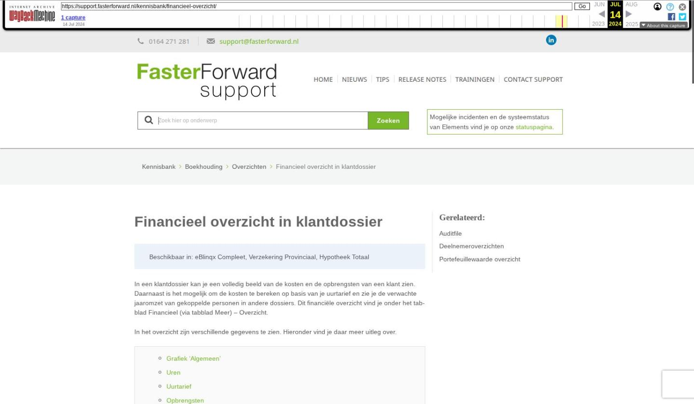

Financieel overzicht in klantdossier

Tekstinhoud
Financieel overzicht in klantdossier
Beschikbaar in: eBlinqx Compleet, Verzekering Provinciaal, Hypotheek Totaal
In een klantdossier kan je een volledig beeld van de kosten en de opbrengsten van een klant zien. Daarnaast is het mogelijk om de kosten te bereken op basis van je uurtarief en zie je de verwachte jaaromzet van gekoppelde personen in andere dossiers. Dit financiële overzicht vind je onder het tabblad Financieel (via tabblad Meer) – Overzicht.
In het overzicht zijn verschillende gegevens te zien. Hieronder vind je daar meer uitleg over.
Grafiek 'Algemeen'
Uren
Uurtarief
Opbrengsten
Openstaande facturen
Producten
Actuele jaarpremies
Informatie icoon
Grafiek 'Algemeen'
Hier zie je de opbrengsten, kosten en het bijbehorende resultaat van het afgelopen jaar. Dit is een visuele weergave van de tabellen op deze pagina.
Uren
Hier zie je per jaar het totaal van uren die medewerkers van jouw organisatie geboekt hebben in dit dossier. Let op: alleen de activiteiten waarop is geboekt via de urenregistratie, worden weergegeven. Gebruik je alleen de activiteit 'Algemeen' en wil je meer activiteiten toevoegen? Neem dan contact op met onze supportafdeling.
Uurtarief
Hier kan je jouw uurtarief invullen om jouw kosten te berekenen op basis van het aantal bestede uren. Indien ingevuld, wordt het uurtarief op automatisch gevuld met de standaard dossierkosten van dat dossier.
Opbrengsten
Hier zie je de reeds ontvangen en te verwachten opbrengsten per categorie.
Openstaande facturen
Hier zie je de facturen die nog niet betaald zijn door de klant. Dit zijn facturen die nog niet zijn tegengeboekt in je boekhouding.
Producten
Hier zie je alle lopende producten van dit dossier. Een lopend product:
Heeft een startdatum in het verleden (bij schadeverzekeringen in het rechterdeel, bij andere producten links in de productkaart)
En heeft de offertesysteemstatus Lopend (en bij de schadeverzekeringen is het rechterdeel niet geroyeerd)
Elk product die hier aan voldoet wordt als 'één' opgenomen in de telling. De uitzondering hierop is het product schadeverzekering. Hier worden alle lopende polissen (rechterdelen) geteld. Dit zijn polissen met een startdatum in het verleden en de mutatiestatus 'Lopend'.
Voor 'Nieuw dit jaar' gelden ook bovenstaande criteria met het verschil:
Heeft een start-/ingangsdatum in het huidige jaar
Actuele jaarpremies
Hier zie je de huidige jaarpremies van alle lopende verzekeringen in dit dossier.
Informatie icoon
Sta met je muis stil op het i-icoontje voor meer informatie over de tabel of grafiek.
Laatste update: 21 mei 2024
Tagged: facturen
Was deze informatie nuttig?
Ja Nee